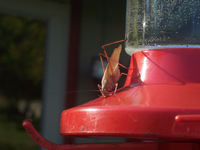
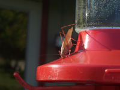

Next Photo
-
Vote
Silhouette Sunset
I rarely take sunset photos, this is one of my exceptions though. The colors all cluster around orange, so much that it is nearly monochromatic. The silhouettes of a fence and a strand of barbed wire are the main focal points of the photo, and the colors add interest. As post-processing a slight soft focus was applied, adding to the dreamy feel of the photo. I should note, as I took this picture I nearly got frostbite from the bitter cold of our winter. Quite a contrast to the warmth of the photo.
More...
Title: Silhouette Sunset
Description: I rarely take sunset photos, this is one of my exceptions though. The colors all cluster around orange, so much that it is nearly monochromatic. The silhouettes of a fence and a strand of barbed wire are the main focal points of the photo, and the colors add interest. As post-processing a slight soft focus was applied, adding to the dreamy feel of the photo. I should note, as I took this picture I nearly got frostbite from the bitter cold of our winter. Quite a contrast to the warmth of the photo.
Keywords: monochromatic,sunset,orange,barbed wire
Hidden: n
Date added: Mon Feb 12 23:31:20 CST 2007
Date taken: Tue Jan 16 14:31:57 CST 2007
Camera: Fujifilm Finepix S5100
Resolution: 2272 x 1704
Mode: Shutter Priority
Shutter speed: 1/640
Flash: Not Used
Exposure time: 1/640
Iso: 100
Metering: Matrix
Aperture: f/6.3
Focal length: 10.7mm
Artist: NathanielGuy Mahieu
Copyright: 2006 NathanielGuy Mahieu
Views: 1108

 
